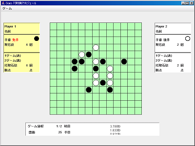

対戦実行モジュールの操作方法
■ 対戦実行モジュールの機能
- デフォルトでは、人対人で、先手後手を入れ替えた2ゲームの対戦になっている
- スタートで五五ゲームを対戦する
- 対戦結果を戦譜としてファイルに保存できる
- 保存した戦譜は、戦譜再現モジュールで鑑賞できる
- 局面生成モジュールで作られた初期局面を読み込んで、任意の局面から対戦できる

■ 対戦実行モジュールの使用法
● 対戦実行モジュールの起動方法
- Gogoシステムのルートにある start.bat を実行する。
● 対戦実行モジュールの操作方法
◎ 初期設定
○ 初期局面設定
ゲーム開始時の局面を設定する。
設定しない場合、デフォルト設定となる。
- メニューの「設定」から「初期局面設定」を選択する。
- ファイル選択ダイアログから、設定ファイルを読み込む。
- 設定ファイルは、局面生成モジュールで作成できる。
- setting\default.gog はデフォルト設定と同じ設定のファイルである。
- デフォルト設定は、盤面に何も置かれていない状態の局面である。
○ 時間制限のON・OFF切替
コンピュータの着手の時間制限の使用を切り替える。
デフォルト設定では、時間制限が有効である。
なお、制限時間は30秒である。
また、時間制限を無効にしても、10分経過すると、無限ループとみなし、処理を打ち切る。
制限時間を超える処理の動作確認をしたい場合、OFFにするとよい。
- メニューの「設定」から「時間制限をOFFに」を選択すると、時間制限を無効にする。
- 時間制限を有効に戻す場合は、メニューの「設定」から「時間制限をONに」を選択する。
ゲーム開始後は、設定変更はできない。
◎ ゲームの実行方法
- メニューの「ゲーム」から「スタート」を選択すると、ゲーム開始となる。
- 盤面をマウスでクリックすると、石が置かれる。
- 最初のゲームでは、Player1が先手となる。
- 1回のゲーム終了後、次のゲームをするには、メニューから「2回戦」を選択する。
- 次のゲームでは、先手後手が入れ替わる。
◎ 戦譜(対戦ログ)の保存
- 2回1セットのゲーム終了後、メニューの「ゲーム」から「戦譜保存」を選択すると、対戦ログを保存できる。
- ファイル選択ダイアログから、保存する名前を決定する。
◎ ゲームの途中終了
- メニューの「ゲーム」から「リセット」を選択すると、ゲームを終了する。
- 途中終了すると、1戦目からやり直しとなる。
◎ システムの終了
- メニューの「ゲーム」から「終了」を選択すると、対戦実行モジュールを終了する。